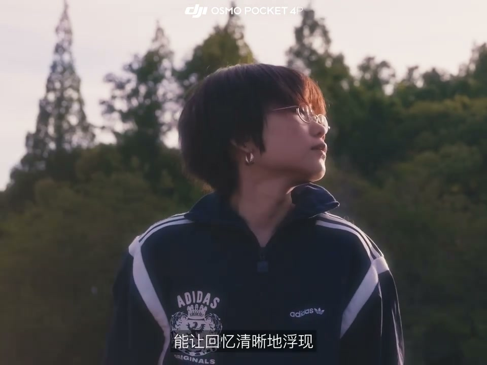

内容要点
这段视频围绕「当你不想在VLOG里露脸时……「大疆Pocket4P」」展开，按时间介绍其中的关键环节。不想在视频里露脸吗。
开场引入
不想在视频里露脸吗。方法太多了。比如像这样把画面变成分屏。让上半部分给你的身体。产生有趣的融合。不只干脆放弃融合。把整个身体抠出来。这样你看起来像是环境中的地面。也不错。适当的时候还能做个转场

[00:00] 开场引入相关画面。
Opening introduction footage.
核心内容
树叶 车票 落花。随便是根据你vlog的主题来变化。要么传统一点 转过身去。全片都拍背影。或者脚步也行嘛。但是啊 我也知道时代变了。AI早已能让你的脸千变万化。够了够了。不如脸的方法和好处都多到爆炸。暂缓容貌焦虑 画面更有创意

[00:36] 核心内容相关画面。
Core-content footage.
操作演示
哇 当时居然能笑得这么傻。哦 那次刚从高原回来吧。晒得够黑的呀。动作浮夸 表情很大。但真年轻啊。或许很多年以后。放醋台的硬盘早已不知去向。只有那些大大方方展出出来的面孔。能让回忆清新的浮现。那时候一定不会懊悔

[01:14] 操作演示相关画面。
Operational demonstration footage.
总结
哇 当时居然能笑得这么傻。